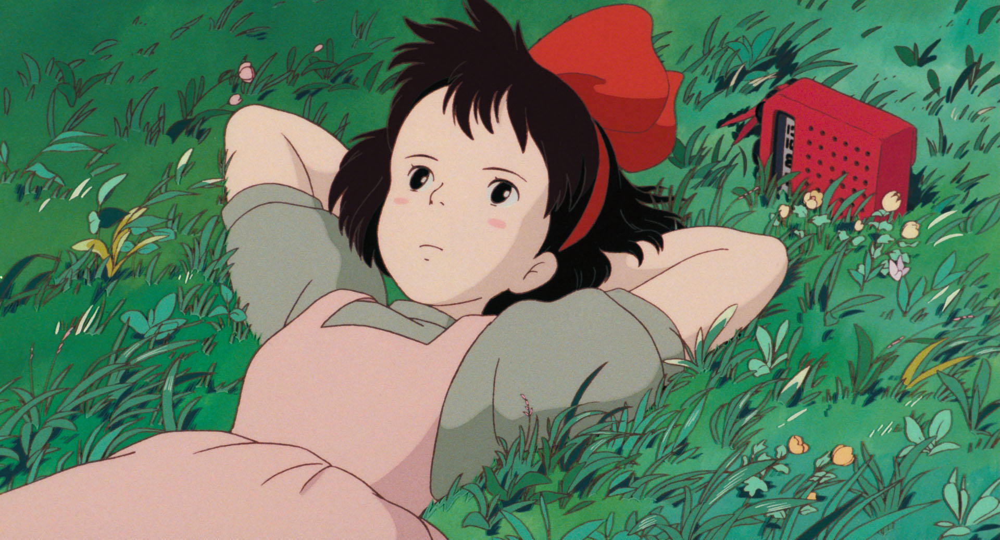
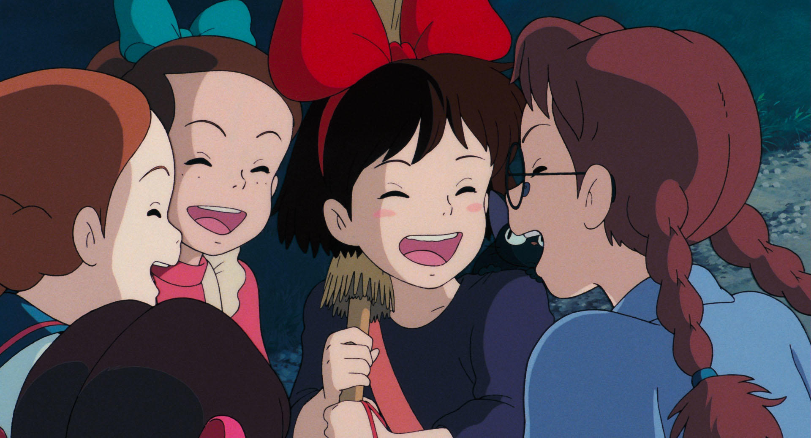
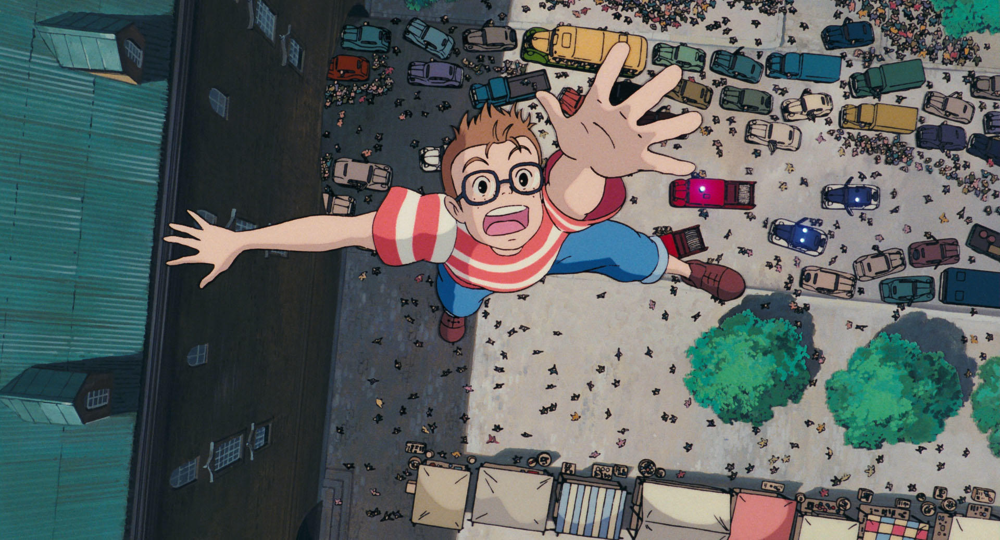
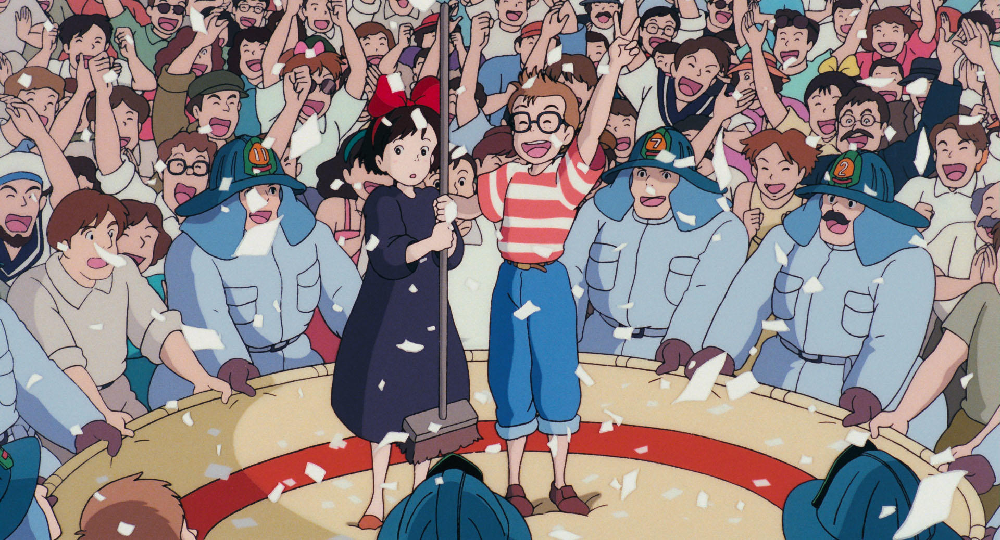

| 原作 | 角野栄子 |
|---|---|
|
プロデューサー・ 脚本・監督 |
宮崎 駿 |
| 音楽 | 久石 譲 |
| 音楽演出 | 高畑 勲 |
| 主題歌 | 荒井由実 |
| 声の出演 |
高山みなみ ⋅ 佐久間レイ ⋅ 山口勝平 ⋅ 加藤治子 ⋅ 戸田恵子 |
| 上映時間 | 約102分 |
| 配給 | 東宝 |
| 公開日 | 1989.7.29（土） |
魔女の宅急便(第1巻)
主人公である魔女の少女キキは、13歳になったら魔女の修行のためよその町に移り住み独り立ちするというしきたりに従い、満月の夜、相棒の黒猫ジジと共に、新たな街を探して旅立った。
紆余曲折を経て、定住先に決めたコリコの町のパン屋「グーチョキパン店」のおかみ・おソノさんに気に入られ、彼女の厚意でパン屋に居候させてもらったキキは、唯一のとりえである空飛ぶ魔法を活かして空飛ぶ宅急便屋を開業する。次々に舞い込むお届け物の仕事や飛行クラブの少年とんぼとの出会いなどの様々な出来事を経験していき、やがて1年目の里帰りを迎える。
...
魔女の宅急便キキと新しい魔法(第2巻)
コリコの町での暮らしも2年目を迎え、キキは町の人々たちともすっかり打ち解けるようになった。そんな中、キキは魔女として生きることを止めるか否かを思い悩むほどの重大な問題に直面する。
魔女の宅急便もうひとりの魔女(第3巻)
コリコの町での暮らしも3年目となり、16歳となったキキの元に、ケケと名乗る12歳の謎の魔女が転がり込む。ケケに振り回され時に傷つきながらも成長していくキキを通じ、2人の少女の自立の過程が描かれる。
魔女の宅急便キキの恋(第4巻)
17歳になり、とんぼのことを異性として意識し始めたキキの恋模様が描かれる。
魔女の宅急便魔法のとまり木(第5巻)
遠距離恋愛ゆえのとんぼとのすれ違いや魔法の力の低下、ジジとの意思疎通の不能など、19歳の大人となったキキに様々試練が訪れる。
魔女の宅急便それぞれの旅立ち(第6巻)
第5巻の物語から13年後、キキはとんぼと結婚し二児の母親となっていた。
キキの子供である双子の姉弟の姉ニニは魔女の血を受け継ぎながらも魔女になることに興味はなく、反対に双子の弟トトはそもそもなれやしない魔女に興味津々で男の子だから魔女にはなれないという現実が不満でならない。そんな葛藤や悩みを抱えつつ13歳を迎えた2人の子供たちと我が子を見守るキキ、そしてコリコの町の人々。それぞれの成長と旅立ちを描く完結編。
魔女の宅急便 特別編 キキに出会った人びと
グーチョキパン店のおソノさんの幼少時代からキキとの出会いまでを始め、コリコの町を彩った多彩なわき役たちや名もないコリコの住人たちをメインに据えて語られるサイドストーリー集。
魔女の宅急便 特別編 キキとジジ
赤ちゃん時代から魔女になることを決意する10歳までのキキと黒猫ジジとの関わりを描く。
魔女の宅急便 特別編 ケケと半分魔女
本編第3巻に登場したケケが大人になって書いた「半分魔女―もうひとつのものがたり」という物語。4歳のときに母を亡くした少女タタは、母の遺した「おわりのとびら」という本を屋根裏部屋で見つけ「半分を探す旅」に出る。
もっと読む